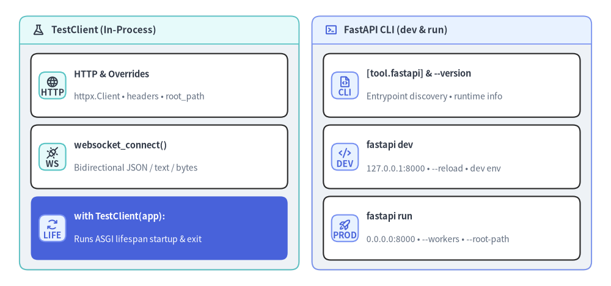

fastapi.testclient & cli
TestClient（fastapi.testclient）によるインプロセスの同期 HTTP・WebSocket・ASGI lifespan テストと、ローカル自動リロード開発（fastapi dev）・本番 Uvicorn 実行（fastapi run）・環境バージョン確認（fastapi --version）を担う fastapi コマンドラインインターフェース（fastapi.cli / fastapi-cli）のリファレンスです。

classTestClient#
httpx.Client と AnyIO の BlockingPortal を基盤とする fastapi.testclient の同期テストクライアント（Starlette からの再エクスポート。fastapi[standard] に含まれる httpx が必要）です。実ネットワークソケットを開かずにメモリ上で ASGI アプリケーションへ直接 HTTP・WebSocket リクエストを送出します。with TestClient(app) as client: コンテキストマネージャとして使用すると、ASGI lifespan の起動・終了処理（lifespan.startup / lifespan.shutdown）が確実に実行されます。
from typing import Any, Literal
import httpx
from starlette.types import ASGIApp
from fastapi.testclient import TestClient
class TestClient(httpx.Client):
def __init__(
self,
app: ASGIApp,
base_url: str = "http://testserver",
raise_server_exceptions: bool = True,
root_path: str = "",
backend: Literal["asyncio", "trio"] = "asyncio",
backend_options: dict[str, Any] | None = None,
cookies: httpx._types.CookieTypes | None = None,
headers: dict[str, str] | None = None,
follow_redirects: bool = True,
client: tuple[str, int] = ("testclient", 50000),
) -> None: ...
コンストラクタパラメータ一覧#
| パラメータ | 型 | デフォルト | 説明 |
|---|---|---|---|
app |
ASGIApp |
必須 | テスト対象の FastAPI（または ASGI ミドルウェアラップ済み）アプリケーション。 |
base_url |
str |
"http://testserver" |
client.get("/items") などの相対パスに付与されるベース URL。 |
raise_server_exceptions |
bool |
True |
サーバー側の未捕捉例外をテスト呼び出し元へ直接再送出します。500 Internal Server Error レスポンス自体を検証したい場合は False を指定します。 |
root_path |
str |
"" |
リバースプロキシ配下（fastapi run --root-path /api/v1）を再現する ASGI scope["root_path"] プレフィックス。 |
backend |
Literal["asyncio", "trio"] |
"asyncio" |
インプロセス BlockingPortal が使用する AnyIO イベントループバックエンド。 |
backend_options |
dict[str, Any] | None |
None |
anyio.start_blocking_portal に渡すバックエンド固有設定（例: {"use_uvloop": True}）。 |
cookies |
CookieTypes | None |
None |
クライアント全体で共有・永続化される初期 Cookie。 |
headers |
dict[str, str] | None |
None |
このクライアントからの全リクエストに付与される既定 HTTP ヘッダー辞書。 |
follow_redirects |
bool |
True |
3xx リダイレクトを自動追跡するかどうか（素の httpx.Client と異なり既定で True）。 |
client |
tuple[str, int] |
("testclient", 50000) |
request.client（scope["client"]）として公開される疑似 (host, port) タプル。 |
使用例#
from collections.abc import AsyncIterator
from contextlib import asynccontextmanager
from fastapi import Depends, FastAPI, Request
from fastapi.testclient import TestClient
lifespan_log: list[str] = []
@asynccontextmanager
async def lifespan(app: FastAPI) -> AsyncIterator[None]:
app.state.db_ready = True
lifespan_log.append("startup")
yield
lifespan_log.append("shutdown")
app = FastAPI(lifespan=lifespan)
def get_env_label() -> str:
return "production"
@app.get("/info")
def info(request: Request, env: str = Depends(get_env_label)) -> dict[str, object]:
return {
"ready": request.app.state.db_ready,
"env": env,
"root_path": request.scope.get("root_path", ""),
"client_host": request.client.host if request.client else None,
}
app.dependency_overrides[get_env_label] = lambda: "test"
with TestClient(
app,
root_path="/api/v1",
headers={"X-Suite": "unit"},
client=("10.0.0.8", 61000),
) as client:
res = client.get("/info")
assert res.status_code == 200
assert res.json() == {
"ready": True,
"env": "test",
"root_path": "/api/v1",
"client_host": "10.0.0.8",
}
app.dependency_overrides.clear()
assert lifespan_log == ["startup", "shutdown"]
methodTestClient.websocket_connect()#
インプロセスで ASGI WebSocket ハンドシェイクを実行し、コンテキストマネージャ対応の WebSocketTestSession を返します。サブプロトコル交渉や追加ヘッダー指定（**kwargs）に対応し、send_text / send_bytes / send_json および receive_text / receive_bytes / receive_json で双方向メッセージを同期テストできます。
from collections.abc import Sequence
from typing import Any
from starlette.testclient import WebSocketTestSession
def websocket_connect(
self,
url: str,
subprotocols: Sequence[str] | None = None,
**kwargs: Any,
) -> WebSocketTestSession: ...
パラメータと WebSocketTestSession メソッド#
| 項目 | シグネチャ／型 | 説明 |
|---|---|---|
url |
str |
接続先 WebSocket パスまたは ws:// URL（例: "/ws/chat?room=general"）。 |
subprotocols |
Sequence[str] | None = None |
ハンドシェイク時に提示する Sec-WebSocket-Protocol サブプロトコルリスト。 |
**kwargs |
Any |
ハンドシェイクリクエストへ渡す追加キーワード引数（headers={...} など）。 |
session.send_text(data) / receive_text() |
str |
UTF-8 テキストフレームの送信・同期受信。 |
session.send_bytes(data) / receive_bytes() |
bytes |
バイナリフレームの送信・同期受信。 |
session.send_json(data, mode="text") / receive_json(mode="text") |
Any |
JSON オブジェクトのシリアライズ送信・逆シリアライズ受信。 |
session.close(code=1000, reason=None) |
None |
クライアント側から正常クローズフレームを送出します。 |
使用例#
from fastapi import FastAPI, WebSocket
from fastapi.testclient import TestClient
app = FastAPI()
@app.websocket("/ws/echo")
async def ws_echo(websocket: WebSocket) -> None:
chosen = "chat.v2" if "chat.v2" in websocket.scope.get("subprotocols", []) else None
await websocket.accept(subprotocol=chosen)
payload = await websocket.receive_json()
await websocket.send_json({"echo": payload, "subprotocol": chosen})
await websocket.close()
client = TestClient(app)
with client.websocket_connect("/ws/echo", subprotocols=["chat.v1", "chat.v2"]) as ws:
ws.send_json({"ping": 1})
reply = ws.receive_json()
assert reply == {"echo": {"ping": 1}, "subprotocol": "chat.v2"}
cmdfastapi dev#
fastapi-cli（pip install "fastapi[standard]" で導入）を介してローカル開発用 Uvicorn サーバーを起動します。外部ネットワークへ誤公開しないようデフォルトで安全なローカルループバック 127.0.0.1:8000 にバインドし、ファイル監視による自動リロードを有効化するとともに、未設定時は FASTAPI_ENV="development" を設定します。エントリポイントは pyproject.toml の [tool.fastapi] entrypoint、--entrypoint、または PATH から解決されます。
fastapi dev [PATH] [OPTIONS]
引数とオプション一覧#
| 引数／オプション | デフォルト | 説明 |
|---|---|---|
path（[PATH]） |
自動検出 | FastAPI アプリを公開する Python ファイル（main.py）またはパッケージディレクトリの任意パス。 |
--host TEXT |
"127.0.0.1" |
バインド先インターフェース。開発サーバーが LAN／外部へ露出しないよう既定でローカルホストに制限されます。 |
--port INTEGER |
8000 |
開発サーバーが待ち受ける TCP ポート番号。 |
--reload / --no-reload |
--reload |
ソースコード変更を監視してワーカープロセスを自動再起動します。 |
--proxy-headers / --no-proxy-headers |
--proxy-headers |
ローカルリバースプロキシやトンネルからの X-Forwarded-Proto / X-Forwarded-For を解釈します。 |
--root-path TEXT |
"" |
/docs や OpenAPI servers に反映される ASGI scope["root_path"] プレフィックス。 |
--app TEXT |
None |
対象モジュール内の FastAPI インスタンス変数名（省略時は app や api を自動探索）。 |
--entrypoint, -e TEXT |
None |
pyproject.toml の [tool.fastapi] entrypoint を上書きする module.path:app_var 形式のインポート文字列。 |
設定と実行例#
# pyproject.toml
[tool.fastapi]
entrypoint = "my_service.main:app"
# [tool.fastapi] entrypoint を読み取り http://127.0.0.1:8000 で自動リロード起動
fastapi dev
# モジュールパス、カスタム変数名、ポート番号を明示指定
fastapi dev src/my_service/api.py --app api --port 8080
# 位置引数なしでモジュールインポート文字列と root-path を指定
fastapi dev --entrypoint my_service.main:app --root-path /dev-api
cmdfastapi run#
自動リロードを無効化し、コンテナ環境に適した既定バインド 0.0.0.0:8000 で本番用 Uvicorn サーバーを起動する fastapi-cli サブコマンドです。マルチプロセスワーカー拡張（--workers）、信頼済みプロキシ IP 制限（--forwarded-allow-ips）、および非推奨化された FastAPI(root_path=...) に代わるサーバー側 --root-path 指定をサポートします。
fastapi run [PATH] [OPTIONS]
引数とオプション一覧#
| 引数／オプション | デフォルト | 説明 |
|---|---|---|
path（[PATH]） |
自動検出 | [tool.fastapi] entrypoint や --entrypoint を使わない場合の対象 Python ファイルまたはディレクトリパス。 |
--host TEXT |
"0.0.0.0" |
コンテナや VM 内で待ち受けるネットワークインターフェース（本番では前段に TLS リバースプロキシを配置）。 |
--port INTEGER |
8000 |
Uvicorn がバインドする TCP ポート番号。 |
--workers INTEGER |
None（単一ワーカー） |
起動する Uvicorn ワーカープロセス数。 |
--reload / --no-reload |
--no-reload |
本番環境での不要なファイル監視オーバーヘッドを防ぐため既定で無効化されています。 |
--proxy-headers / --no-proxy-headers |
--proxy-headers |
信頼済みプロキシからの X-Forwarded-Proto / X-Forwarded-For ヘッダーを反映します。 |
--forwarded-allow-ips TEXT |
None（127.0.0.1／環境変数） |
X-Forwarded-* ヘッダーの送信を信頼するプロキシ IP／CIDR のカンマ区切り文字列（閉域 Ingress 配下では "*"）。 |
--root-path TEXT |
"" |
上流リバースプロキシがストリップする外部 URL プレフィックス（例: /api/v1）。リクエストごとに /openapi.json と /docs へ動的反映されます。 |
--app TEXT |
None |
対象モジュール内の FastAPI インスタンス変数名。 |
--entrypoint, -e TEXT |
None |
module.path:app_var 形式のインポート文字列（例: my_service.main:app）。 |
実行例#
# [tool.fastapi] entrypoint を利用した 4 ワーカー本番起動
fastapi run --workers 4 --port 8000
# /api/v1 をストリップする TLS リバースプロキシ配下での起動
fastapi run --entrypoint my_service.main:app \
--workers 4 \
--proxy-headers \
--forwarded-allow-ips "*" \
--root-path /api/v1
cmdfastapi --version#
現在の CLI 実行環境の診断バージョン情報を出力して終了します。pyproject.toml のコンソールスクリプト fastapi = "fastapi.cli:main" は fastapi[standard] 導入時に fastapi_cli.cli:main へ処理を委譲し、コア fastapi のみがインストールされている環境では "fastapi[standard]" の導入方法を案内する RuntimeError を送出します。
fastapi --version
動作仕様とプログラマティック参照#
| 項目 | 値／挙動 | 説明 |
|---|---|---|
| コンソールスクリプト | fastapi = "fastapi.cli:main" |
pyproject.toml の [project.scripts] で定義される CLI エントリポイント。 |
| 必要な Extra | pip install "fastapi[standard]" |
fastapi-cli[standard]>=0.0.32 および uvicorn[standard] を一括導入します。 |
| CLI 出力内容 | OS、Python、fastapi、fastapi-cli |
実行環境のバージョン情報を標準出力へ表示し終了コード 0 で終了します。 |
| Python バージョン定数 | fastapi.__version__ |
fastapi-cli 未導入環境でも参照可能なランタイムバージョン文字列（"0.162.2"）。 |
使用例#
from unittest.mock import patch
import pytest
import fastapi
from fastapi import cli as fastapi_cli_shim
assert fastapi.__version__ == "0.162.2"
# When fastapi_cli is absent, fastapi.cli.main() raises an actionable RuntimeError
with patch.object(fastapi_cli_shim, "cli_main", None):
with pytest.raises(RuntimeError, match='pip install "fastapi\\[standard\\]"'):
fastapi_cli_shim.main()